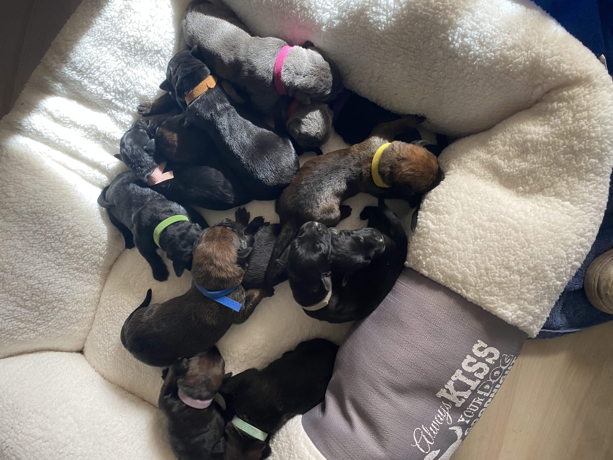
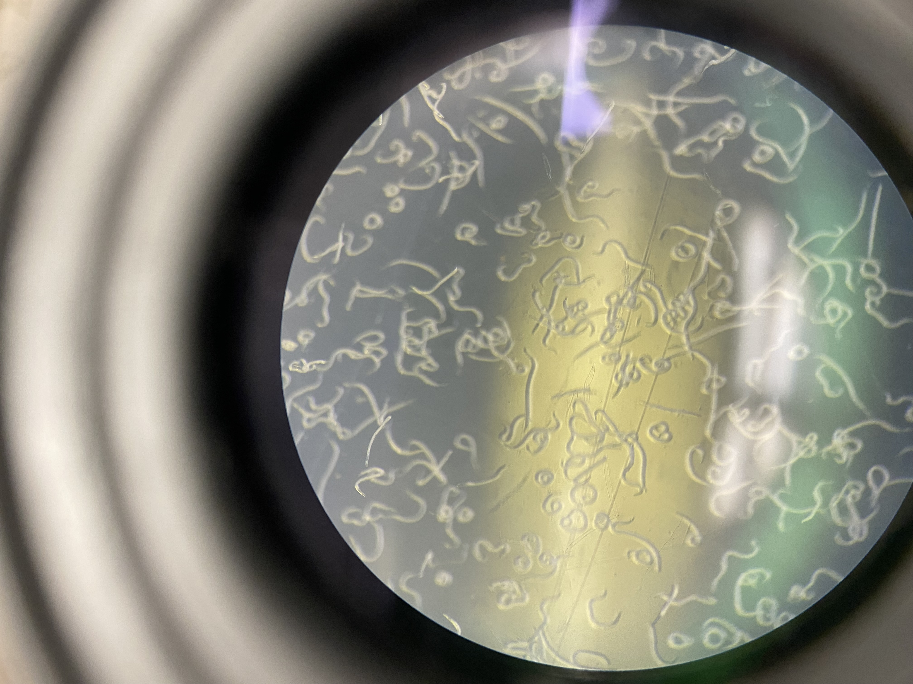
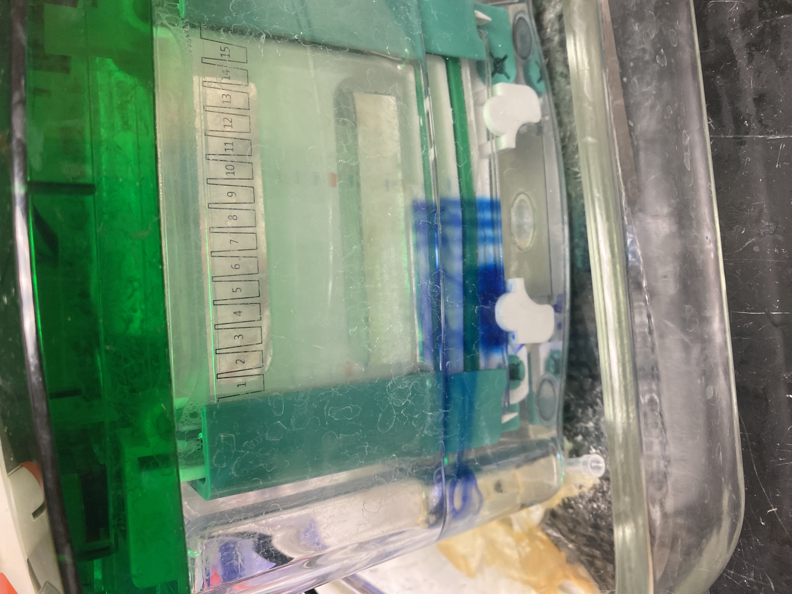
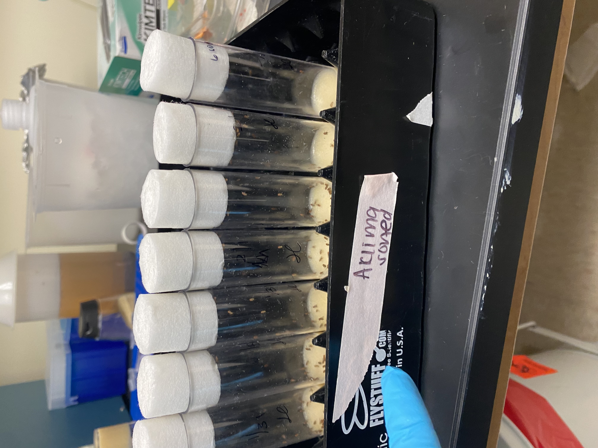
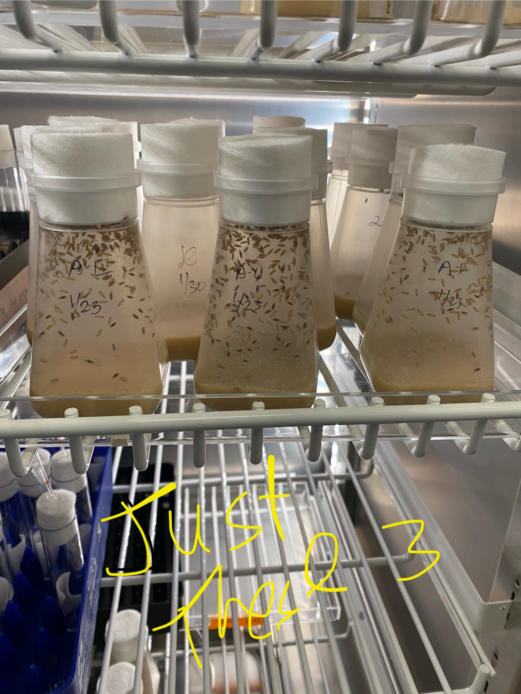
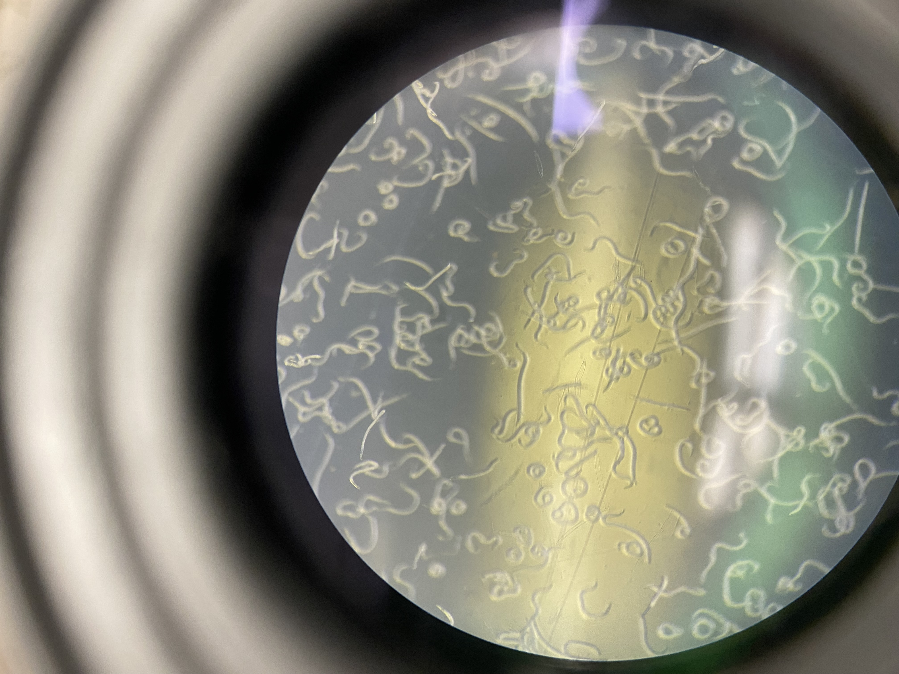
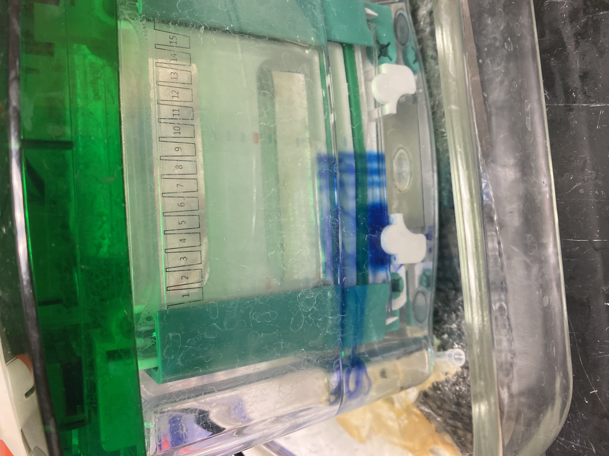
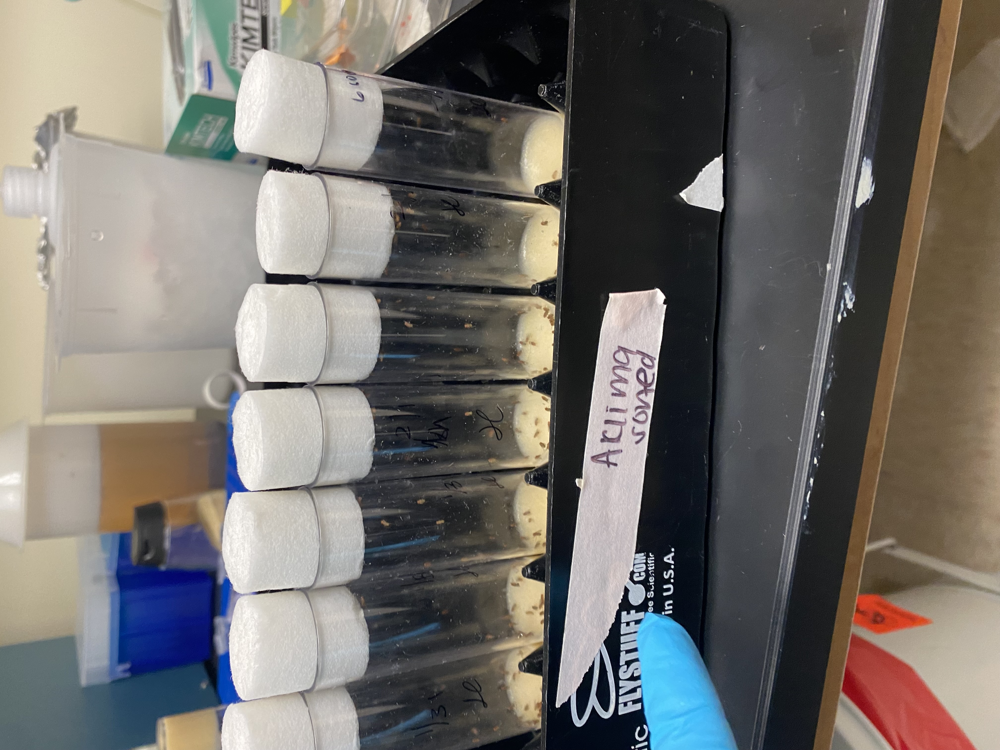
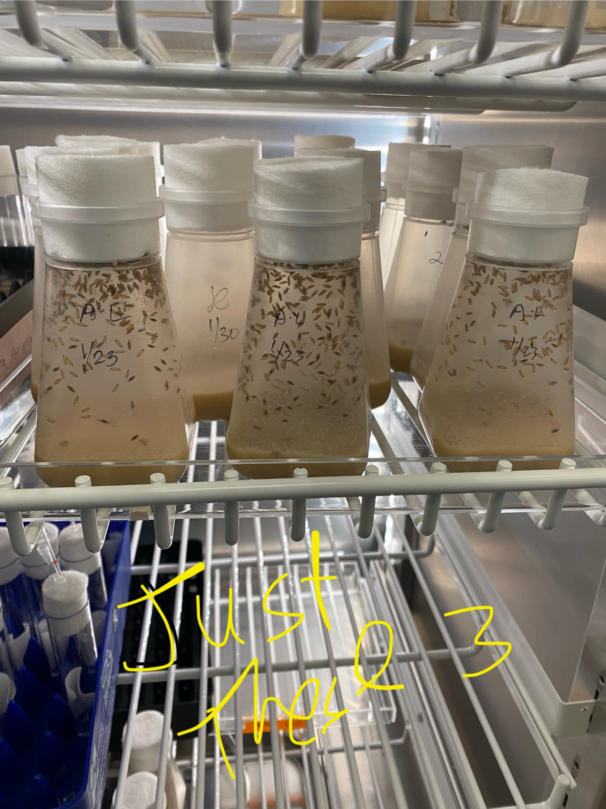

Steven Song
My name is Steven Song, I'm a passionate and driven third-year biology student at the University of California, Riverside (UCR), whose journey in the world of science and healthcare is as fascinating as the organisms I study. With a deep-rooted curiosity and commitment to making a positive impact, I have immersed myself in a diverse range of experiences that reflect my dedication to both academic excellence and community service. At UCR, I have carved out a niche for myself in the field of biology, specializing in the intricate world of parasitic nematodes. As a valuable member of a research lab, I spend my time delving into the complexities of analyzing toxic proteins released by these parasitic nematodes. This work not only requires a keen scientific mind but also exemplifies my commitment to understanding the intricacies of the natural world, especially those aspects that have the potential to impact human and animal health. Beyond the laboratory, I extend their passion for animals and the community through volunteer work at local animal rescues. This hands-on experience allows me to combine my love for biology with a genuine concern for the welfare of animals. Whether it's caring for abandoned pets, facilitating adoptions, or participating in community outreach programs, I am an advocate for those who cannot speak for themselves. Dedication to community service goes beyond the animal kingdom. I am a certified CPR provider and an Emergency Medical Technician (EMT), I am actively involved in emergency medical services, providing crucial assistance during critical situations. The role of an EMT demands quick thinking, composure under pressure, and a profound understanding of medical procedures – qualities that I possess in abundance. These experiences not only enrich my academic journey but also shape me into a compassionate and capable future healthcare professional. Looking ahead, I am on a trajectory to become a Doctor, driven by a desire to translate my knowledge and skills into tangible improvements in healthcare. This aspiration is rooted in my experiences as a biology student, a researcher, a volunteer, and an EMT, each contributing to a holistic understanding of the human experience in the context of health and well-being. I stand out not only for my academic achievements but also for the diverse tapestry of experiences that weave together to form a well-rounded individual. I represent the epitome of a modern scientist – one who not only thrives in the laboratory but also actively engages with the community, demonstrating that a passion for science can coexist with a genuine concern for the well-being of others. As I continue to navigate the exciting world of biology and healthcare, there is no doubt that I will leave an indelible mark, contributing not only to the scientific community but also to the broader society I are committed to serving.
My name is Steven Song, I'm a passionate and driven third-year biology student at the University of California, Riverside (UCR), whose journey in the world of science and healthcare is as fascinating as the organisms I study. With a deep-rooted curiosity and commitment to making a positive impact, I have immersed myself in a diverse range of experiences that reflect my dedication to both academic excellence and community service. At UCR, I have carved out a niche for myself in the field of biology, specializing in the intricate world of parasitic nematodes. As a valuable member of a research lab, I spend my time delving into the complexities of analyzing toxic proteins released by these parasitic nematodes. This work not only requires a keen scientific mind but also exemplifies my commitment to understanding the intricacies of the natural world, especially those aspects that have the potential to impact human and animal health. Beyond the laboratory, I extend their passion for animals and the community through volunteer work at local animal rescues. This hands-on experience allows me to combine my love for biology with a genuine concern for the welfare of animals. Whether it's caring for abandoned pets, facilitating adoptions, or participating in community outreach programs, I am an advocate for those who cannot speak for themselves. Dedication to community service goes beyond the animal kingdom. I am a certified CPR provider and an Emergency Medical Technician (EMT), I am actively involved in emergency medical services, providing crucial assistance during critical situations. The role of an EMT demands quick thinking, composure under pressure, and a profound understanding of medical procedures – qualities that I possess in abundance. These experiences not only enrich my academic journey but also shape me into a compassionate and capable future healthcare professional. Looking ahead, I am on a trajectory to become a Doctor, driven by a desire to translate my knowledge and skills into tangible improvements in healthcare. This aspiration is rooted in my experiences as a biology student, a researcher, a volunteer, and an EMT, each contributing to a holistic understanding of the human experience in the context of health and well-being. I stand out not only for my academic achievements but also for the diverse tapestry of experiences that weave together to form a well-rounded individual. I represent the epitome of a modern scientist – one who not only thrives in the laboratory but also actively engages with the community, demonstrating that a passion for science can coexist with a genuine concern for the well-being of others. As I continue to navigate the exciting world of biology and healthcare, there is no doubt that I will leave an indelible mark, contributing not only to the scientific community but also to the broader society I are committed to serving.
My name is Steven Song, I'm a passionate and driven third-year biology student at the University of California, Riverside (UCR), whose journey in the world of science and healthcare is as fascinating as the organisms I study. With a deep-rooted curiosity and commitment to making a positive impact, I have immersed myself in a diverse range of experiences that reflect my dedication to both academic excellence and community service. At UCR, I have carved out a niche for myself in the field of biology, specializing in the intricate world of parasitic nematodes. As a valuable member of a research lab, I spend my time delving into the complexities of analyzing toxic proteins released by these parasitic nematodes. This work not only requires a keen scientific mind but also exemplifies my commitment to understanding the intricacies of the natural world, especially those aspects that have the potential to impact human and animal health. Beyond the laboratory, I extend their passion for animals and the community through volunteer work at local animal rescues. This hands-on experience allows me to combine my love for biology with a genuine concern for the welfare of animals. Whether it's caring for abandoned pets, facilitating adoptions, or participating in community outreach programs, I am an advocate for those who cannot speak for themselves. Dedication to community service goes beyond the animal kingdom. I am a certified CPR provider and an Emergency Medical Technician (EMT), I am actively involved in emergency medical services, providing crucial assistance during critical situations. The role of an EMT demands quick thinking, composure under pressure, and a profound understanding of medical procedures – qualities that I possess in abundance. These experiences not only enrich my academic journey but also shape me into a compassionate and capable future healthcare professional. Looking ahead, I am on a trajectory to become a Doctor, driven by a desire to translate my knowledge and skills into tangible improvements in healthcare. This aspiration is rooted in my experiences as a biology student, a researcher, a volunteer, and an EMT, each contributing to a holistic understanding of the human experience in the context of health and well-being. I stand out not only for my academic achievements but also for the diverse tapestry of experiences that weave together to form a well-rounded individual. I represent the epitome of a modern scientist – one who not only thrives in the laboratory but also actively engages with the community, demonstrating that a passion for science can coexist with a genuine concern for the well-being of others. As I continue to navigate the exciting world of biology and healthcare, there is no doubt that I will leave an indelible mark, contributing not only to the scientific community but also to the broader society I are committed to serving.
Experience
Undergraduate Researcher
• In charge of IJ's
• Gel electrolysis
• Activating IJ's for protein extraction
• Infecting wax worms
Volunteer
• Responsible for taking care of animals
• Cleaning up and feeding animals
• making sure the dogs get exersice
Co-founder/Tresurer
• Schedule and reserve rooms for club meetings
• Managing club funds
• Volunteering at local animal shelters
Education
UC Riverside
West Coast EMT
Portfolio






 
 